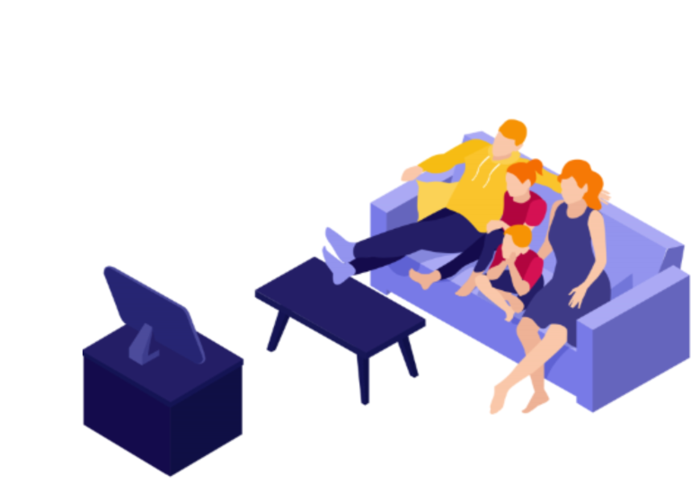

BENEFICIOS DE VER CINE
- El cine también permite además practicar otros idiomas, proporciona cultura general y las películas
de miedo hasta ayudan a quemar calorías y mejoran la respuesta del sistema nervioso
Relaja y reduce el estrés. ...
Ayuda a ver mejor los problemas. ...
Permite hacer catarsis. ...
Desarrolla la creatividad.
